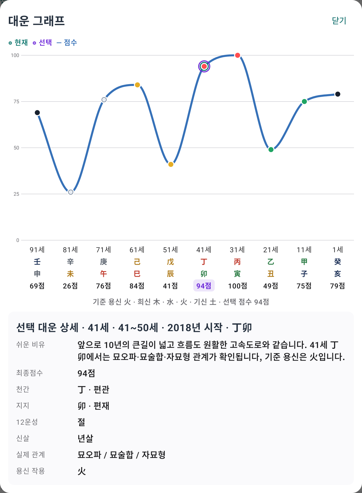
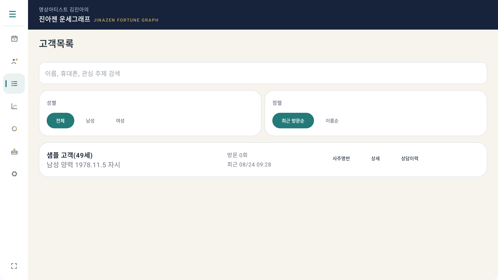
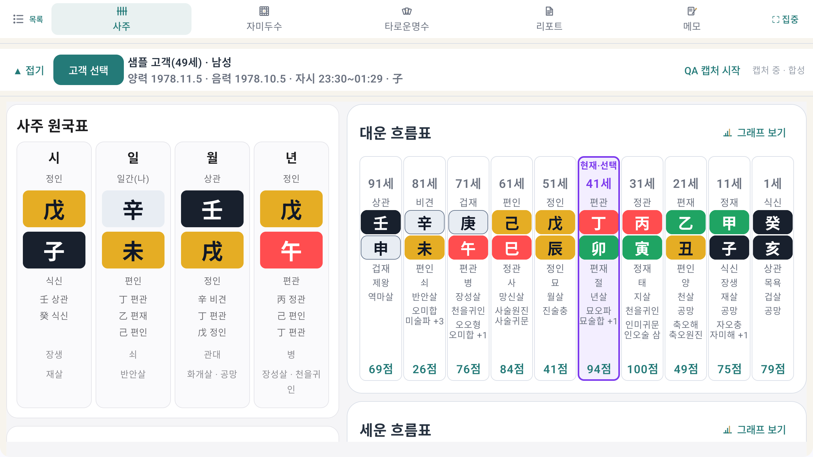
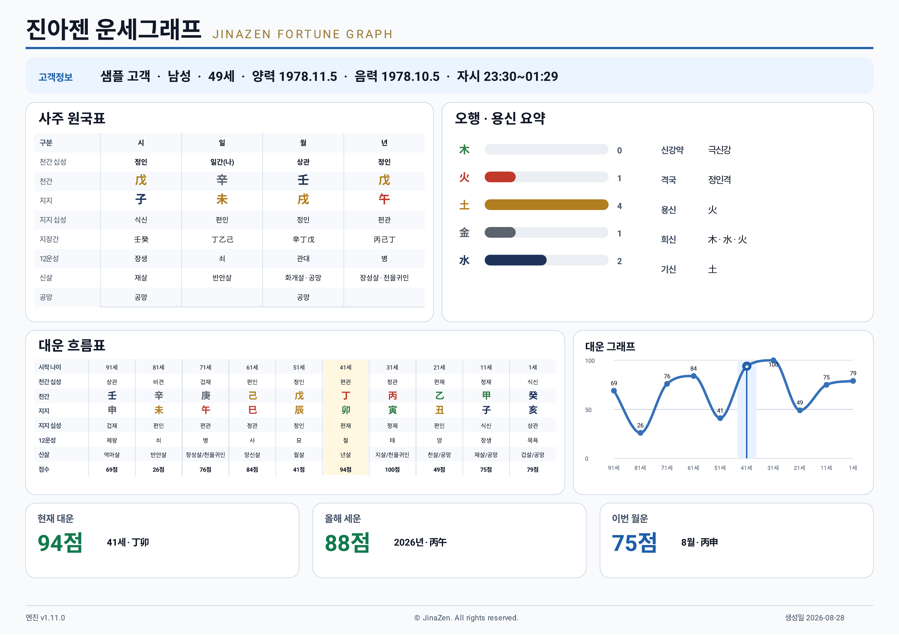
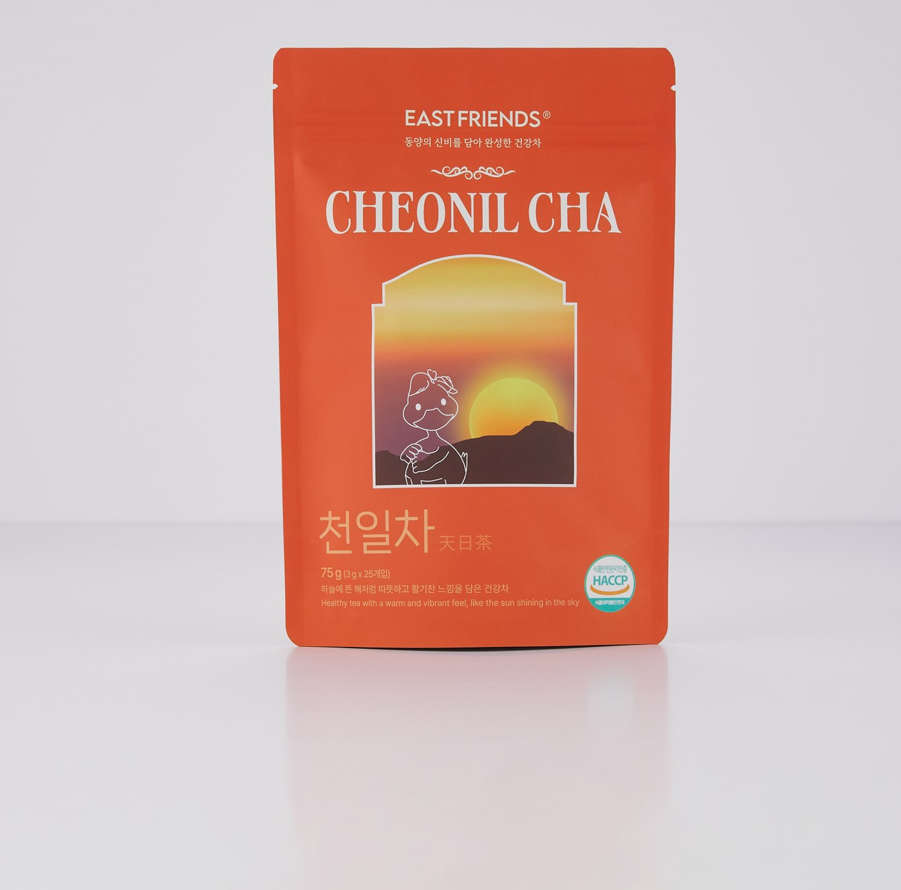
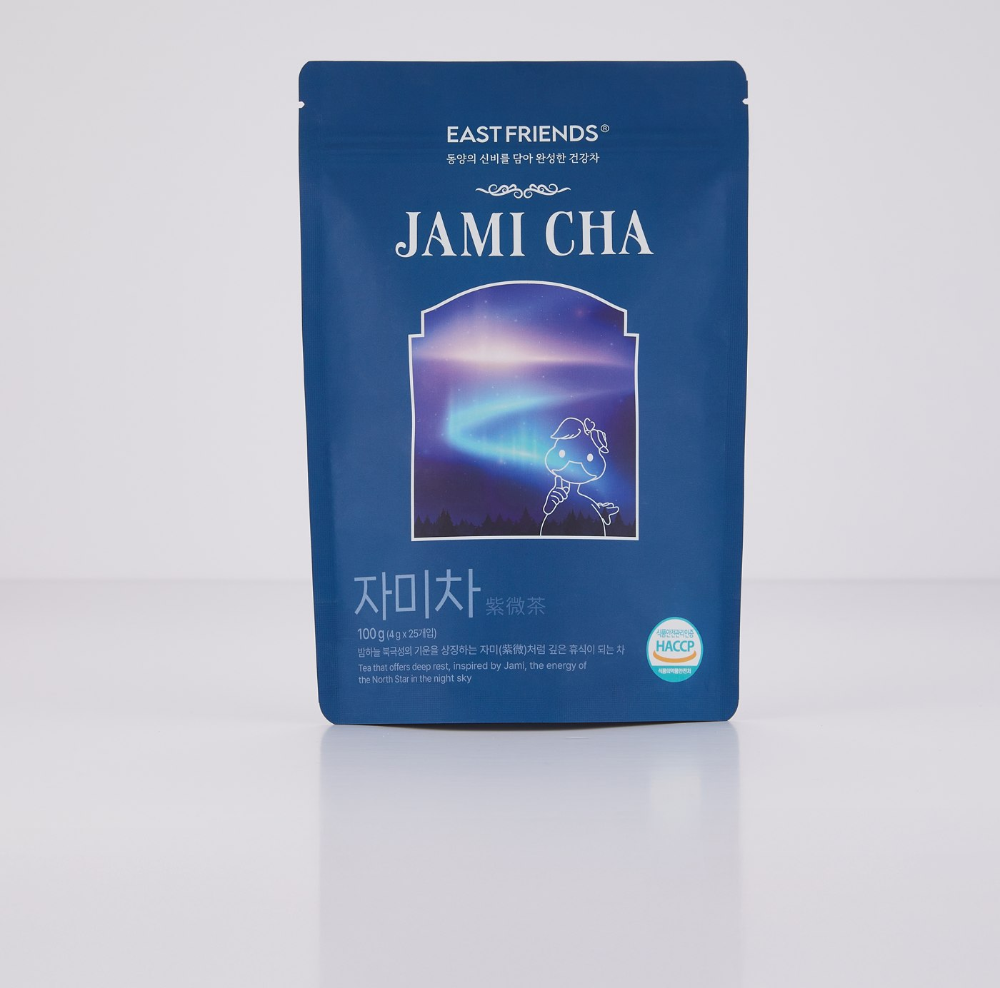
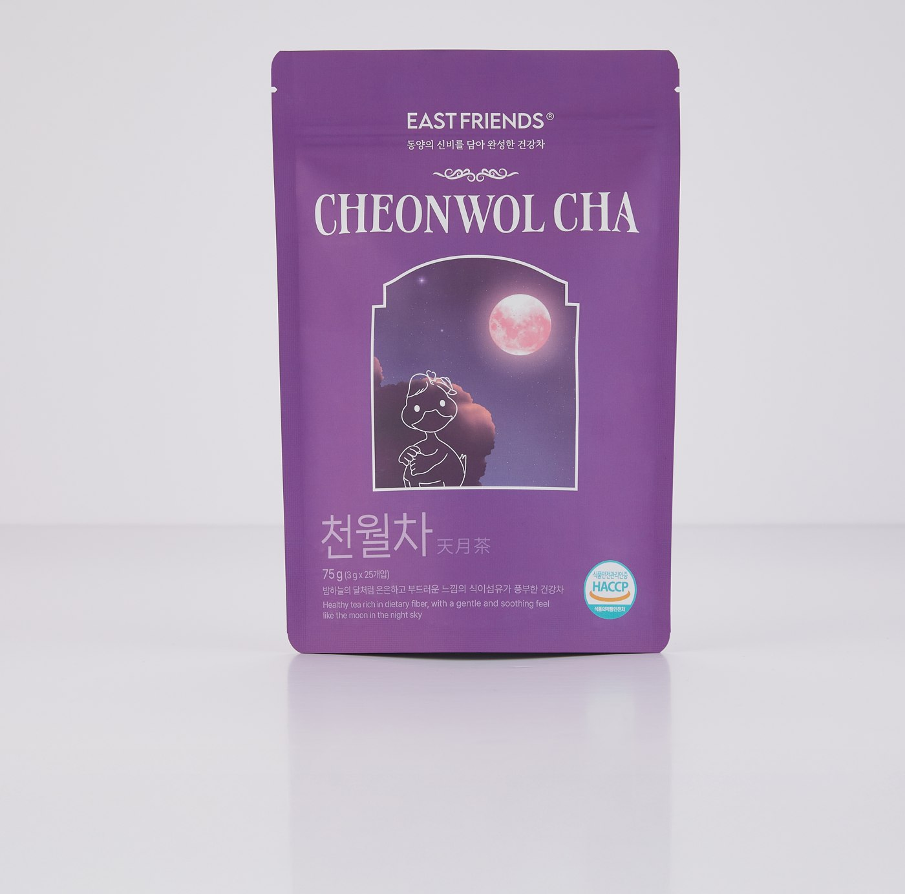
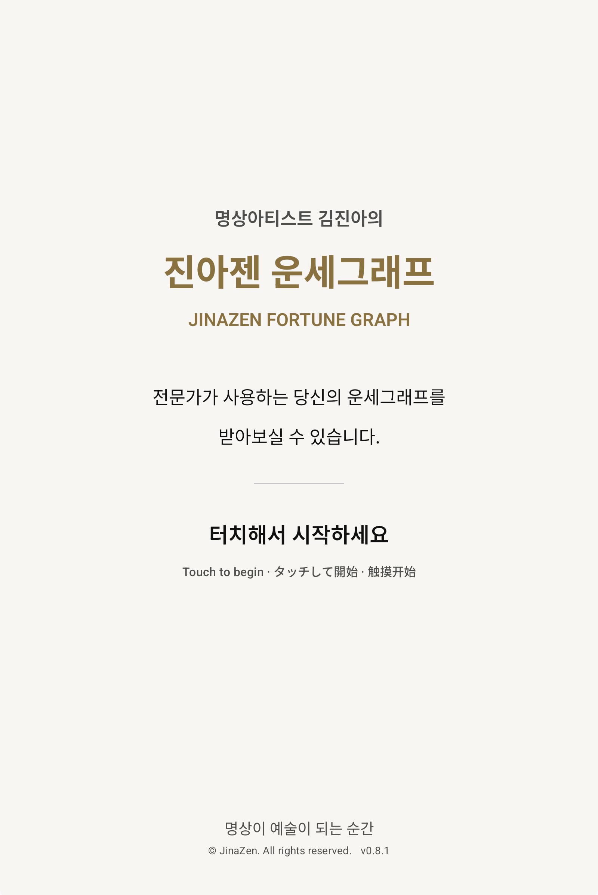
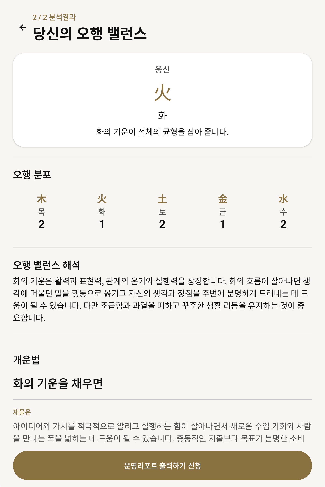

한 사람의 운명을,
한곳에서 입체적으로
세 가지 관점으로, 번거로운 재계산 없이 한 화면에서 완벽한 상담 준비.
사주 · 자미두수 · 타로운명수를 오가는 통합 솔루션을 경험해 보세요.
- 고객 등록 · 목록 · 통합 검색
- 고객별 상담 회차 및 이력 관리
- 상담 메모 및 특이사항 회차별 보관
명상이 예술이 되는 순간
진아젠 JINAZEN
명상아티스트가 만든
삶의 파동을 보다. 보다 정확하게.
전문가를 위한 운세상담 솔루션
다운로드는 무료이며, 앱 안에서 한 번 구매하면 계속 사용합니다. 구독이 아닙니다.
출시를 기념해 정상가보다 낮은 가격으로 시작합니다.

정확한 용신을 바탕으로 운의 흐름을 그래프로 시각화합니다.
사주 · 자미두수 · 타로운명수를 통해 고객의 흐름을 깊이 이해하고 기록합니다.
사주팔자를 여덟 글자에서 멈추지 않고,
운세그래프까지 이어 드립니다.
북극성(자미성)을 중심으로 12궁에 별을 놓아
삶의 영역별 기운을 봅니다.
생년월일에서 나오는 운명수로 세 장의 카드를 뽑아
안과 밖과 올해의 흐름을 봅니다.
세 가지 관점으로, 번거로운 재계산 없이 한 화면에서 완벽한 상담 준비.
사주 · 자미두수 · 타로운명수를 오가는 통합 솔루션을 경험해 보세요.

여덟 글자를 세우고 흐름을 그리는 일은 앱이 합니다.
그것이 이 사람에게 무슨 뜻인지는 선생님이 말합니다.

A4 가로 2페이지 리포트. 원국 · 흐름 · 추천을 정리해 PDF로 저장하고 공유합니다.
종이 인쇄는 매장(진아젠 마인드맵솔루션)에서 제공합니다.

리포트 1페이지 · 2페이지에는 추천과 개운법이 담깁니다
명상아티스트
명상을 위한 여정
어른을 위한 동화를 쓰고,
IT기술로 발명을,
인생을 운세그래프로 시각화하고,
마음을 다스리는 명상차와 함께 그 끝에 명상을 놓습니다.
황금부리는 부리를 만지면 소원이 이루어지는, 한국 전통의 태양의 새를 상징하여 완성한 행운 캐릭터입니다. 동화의 상상 속에서 태어나 현실의 삶 속으로 찾아온 따뜻한 친구입니다.
책 모양 안드로이드 단말기와 책꽂이 거치대를 발명해 광고플랫폼을 운영하고 한국·일본 법인을 세워, 한국과 일본에 누적 10,000대를 설치해 서비스했습니다. 캐논·롯데·공차 파트너십, 충전장치 기술특허 공동발명.
차를 마음을 바라보는 작은 의식으로 보고, 네 가지 명상차를 직접 블렌딩했습니다. 예술의전당 뮤지엄테라피 〈Chill your soul〉 명상전시(2025), 속초 영랑호 보광사 용연정의 '나홀로 명상의자'와 '사랑의 의자'를 만들었습니다.
日 月 星
하늘을 우러르던 우리 민족의 정신적 원형을 세 잔의 차에 담았습니다.
해의 차, 달의 차, 북극성의 차.
동양의학 이론에 맞게 설계한 명상을 위한 한방차입니다.



동우차(東友茶) · 이스트프렌즈 · 기술특허 2건 · HACCP
키오스크에서 결과지를 받고, 상담 태블릿으로 이어지는 매장용 구성입니다. 이스트프렌즈 속초 영랑동 매장에서 먼저 운영하고 전국으로 넓힙니다.
매장 도입 문의

명상이 예술이 되는 순간.
진아젠은 누구나 명상을 통해 자기만의 예술을 찾는 곳입니다.
운세그래프로 삶의 흐름을 읽고, 차와 명상으로 그 흐름에 머무릅니다.